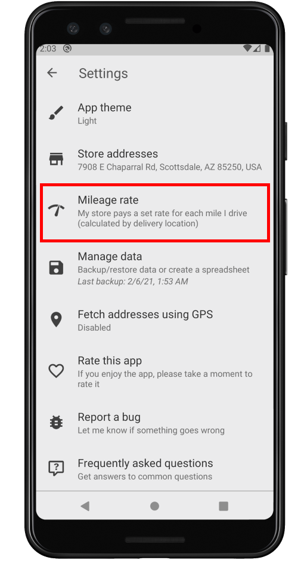
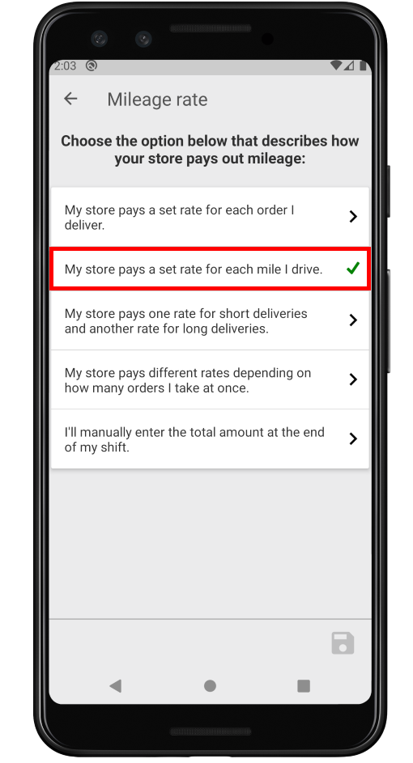
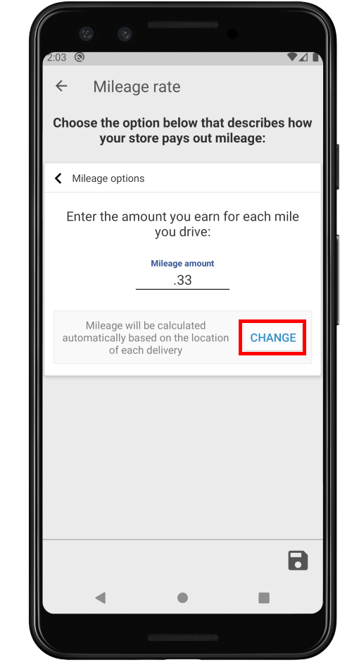
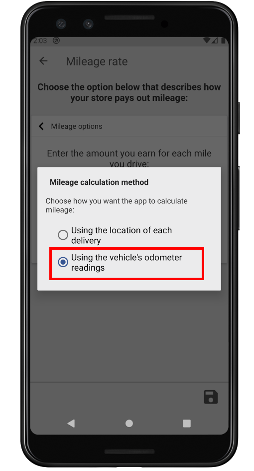
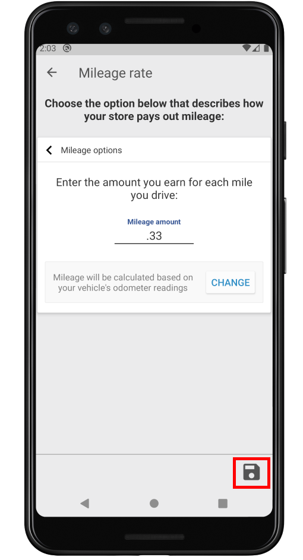
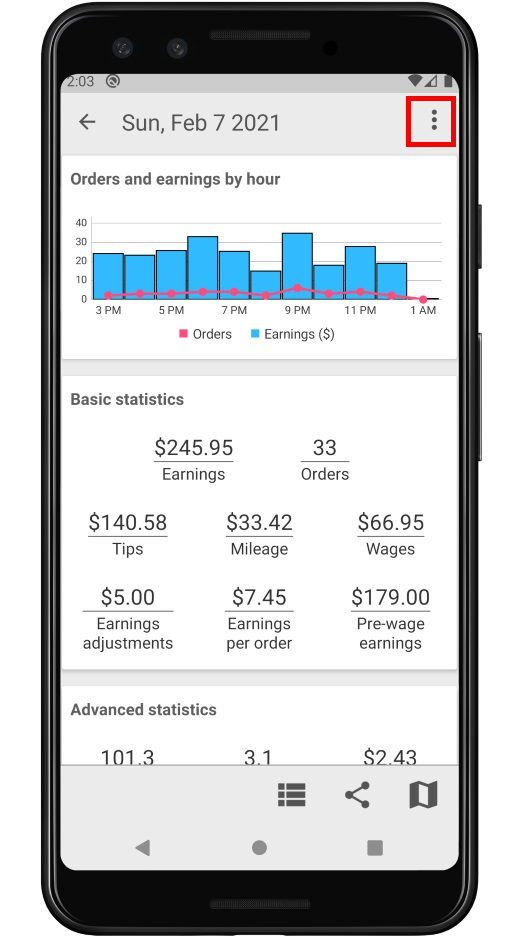
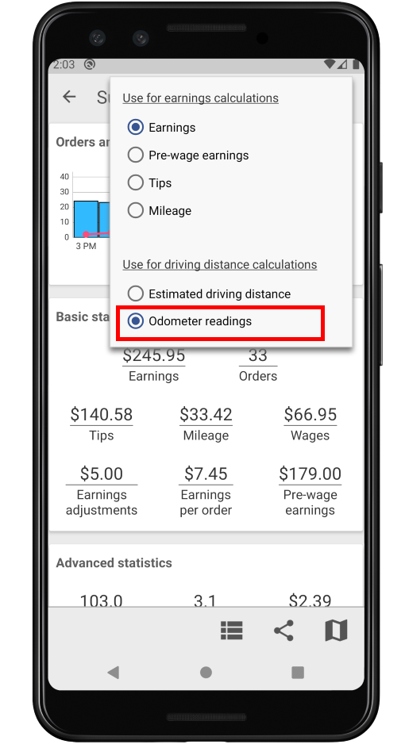
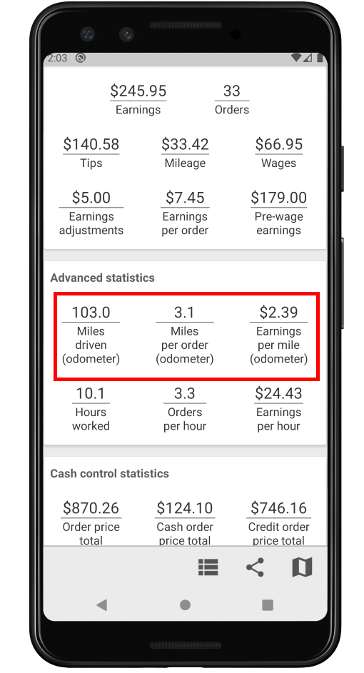

Odometer readings can be used to calculate mileage. To set this up, follow the steps outlined in red below:
    With this option enabled, your mileage will be calculated at the end of your shift.
You can also configure the relevant stats on the Statistics screen to use odometer readings. To do this, follow the steps outlined in red below:
  